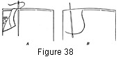

1930—Millinery Processes
by Carlotta M. Brown
EDGE FINISHES
The brim edge of a hat is one of the most conspicuous parts; therefore its finish is an important step in hat-making. If an applied edge finish, such as a binding or fold, is to be put on last, the brim edge beneath it will be covered and so need not be as carefully finished; when a cord-edge or slip-stitch finish is used, however, the brim edge is exposed and must be finished with the greatest care.
Edge Finish with Binding or Fold
Bring the top covering flush with the edge and sew in place with the long-and-short stitch, the long stitch holding the top covering in place. Repeat the process for the facing edge finish.
Cord-edge Finish
The cord-edge finish is so called because a cord or wire is inserted as the seam allowance of the facing is turned in at the edge of the brim. First pin the facing in place. Roughly estimate and cut the amount of wire needed, but leave the ends free, for more may be taken up in sewing it into place or a smaller amount used than estimated. Starting at the back, turn the seam allowance over the wire, never loosening more than two pins at a time; for if more are taken out, the facing is sure to be disarranged. Go around the entire brim edge, pinning the facing again in place as the wire is inserted. The wire may be placed flush with the edge of the brim or it may extend over the edge so that it shows on the top of the hat. In either case the stitch used for finishing it is a long-and-short stitch. The long part should not be over ¼ of an inch and should be placed under the wire on the facing side.
Insert the needle under the wire, bringing it out between the top covering and the facing but not catching it to the top as it is brought up and out. Instead, as it is brought back to the facing side it is caught to the top with a tiny stitch. The long stitches must form a continuous line around the brim edge to prevent the material from bulging (Fig. 38).
Figure 38. Attaching facing of brim to top covering with cord-edge stitch. A, facing folded over wire with needle catching through top-edge finish as it is brought back to facing side. B, needle inserted under wire and coming out between facing and top, completing the long stitch. This stitch definitely outlines the wire, giving the effect of a small cord.
Care must be taken in stretching and pinning the wire in place; for if the material is too loose a bulge at the outer edge is the result, and if it is too tight the result is a warped brim. Pins are placed beneath the wire, the points buried in the crinoline binding around the edge of the brim and the heads toward the outer edge of the brim. After the thread is carried around the brim and the wire has been sewed, the finish at the back is made. Lap the wire from ¼ to ½ of an inch and carry the stitch over the lapping. If it is possible to secure the small clamps used for this purpose, the ends of the wire may be inserted in the clamps.
Slip-stitch Edge Finish
The slip stitch is one of the oldest methods for joining the edges, but it also is one of the most difficult; for unless every stitch is perfect, the edge will be untidy and unattractive. The top and the facing are attached to the brim in exactly the same manner as for the cord-edge finish (see Cord-edge Finish) except that no wire is inserted in the facing; instead this seam allowance is turned into place flush with the edge of the brim. Place pins around the edge at 2-inch intervals, starting at the center back of the brim, with the hat held so that the facing is toward the body of the worker. Work from right to left, using the slip stitch, until the edge is finished (Fig. 50; also Stitches).
Cording for Edge Finish
When the fitted facing and top of the brim extend over the edge to give a soft effect, a cording is generally used for a finish. A cord is placed inside a casing as for unfinished cording (Fig. 20) and sewed to the top covering first, with the facing slip stitched to the cording. This cording effect also may be used to introduce a note of color. When this is done, the cords are covered by material of contrasting color.